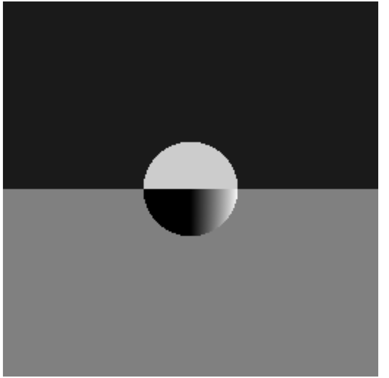
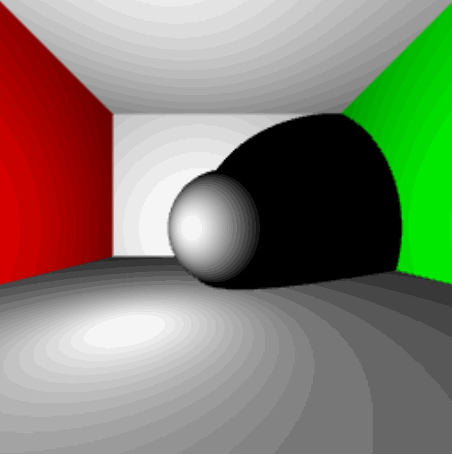

Lambert's Law

To begin we were given some code that set up the canvas (256 x 256) and rendered a gray square on the
page. From there it was time to start setting up our visual spaces. Starting by converting our given
field of view (fov) into radians from degrees by multiplying it by
π / 180.
Next, it was time to setup some scale in the plane that the eye is looking through by setting
a pixel width and half width to help find the center of each pixel to shoot the ray through.
Since the vertical plane we are looking through is 2 units across in real space the size of each pixel
is now:
(width in real space) / (number of pixels) => (2 / 256)
.
Next, we need to
determine the distance our eye is from the plane where we're shooting our rays through. We can do this
can making a right triangle using half of our fov and the plane we're looking through as shown below.
We can use the distance from on end of the plane to the center (1) and the tangent of half of our fov
to find how far away ou eye is from the scene.
The scene at this point looks like this:
Now it's time to start adding some objects to our scene. We'll add a sphere centered at (0, 0, 0) with a radius of 0.25 an a plane beneath the sphere. The sphere should be in the center of the scene sitting above the plane. We haven't actually changed any of the rendering code, so for now the scene hasn't changed visually at all.
Up until this point we have been rendering the same shade fo gray for every pixel onn the screen. Now it's time to start spawning rays (from the eye point) and shooting them through the center of each pixel. To do this we can take and arbitrary pixel (x, y) and find the offset from the center by using the size of our visual plane and size of each pixel. We then need to find the direction vector for this ray which is going from the eye point to that new pixel coordinate, and we have a handy fromto function in our Vector3 class. Lastly, we need to take this direction vector and create a ray with it's origin at the eye point going in the direction we just found and return it. To help debug and see if we generated the the correct ray, we can set each pixel's color to a value between 0 and 1 based on it's max x value; The result is a nice gradient from white on the edges to black in the middle.
Remember that sphere and plane we generated a little while ago? Well now it's time to incorporate them into the scene by finding which rays hit each one! Let's start with just the sphere. We can use it's builtin raycast function to find it each ray hit it or not, using a lighter shade of gray for the sphere and a very for the background. The result looks like this:
Now let's add in the plane beneath the sphere. Things here are a little bit more complicated because we now need to know what object in the scene our ray hits first because that's what we should be seeing. We can use the builtin raycast function or the plane as well to determine if we hit the plane, but we have to decide what color it should be based on if we hit the plane or the sphere first, and we get this rendered scene where we can see the sphere resting on top of the plane:
The scene has sphere resting on a plane, but so far it looks just like a circle on a multicolored background. In order to add a 3D effect we need to add some light shading. In order to determine how to much to light each pixel, we'll use Lambert's Law which states that the intensity of the light hitting a surface is dependent on the cosine of the angle between the surface normal at the point of impact and the ray to the light from that point, and that intensity is independent of the viewing direction. Some basic pseudocode looks like:
Find a vector from the intersection point to the light_pt and normalize
Calculate the dot product of the light vector and the surface normal
Return calculated light (between 0 and 1)}
Once we have the light setup we can now rotate the light in a circle around the center by using the cos (for x) and sin (for z) of the time elapsed to simulate the light moving around the sphere in the center.
Lambert's Law
What happened to the top?
Where's the plane?
Here's what we wanted!
Now let's animate it!

Now that there's light what should happen if there is an object between the point that we hit wit our initial view ray and the light ray? There should be a shadow. We can determine if a point is in shadow by casting a shadow ray from our original intersection point to the light and see if it hits another object using their builtin raycast functions. Note since we are launching a ray from a point on the surface of an object, it can intersect with itself again and act as if it's in shadow while not actually being in shadow resulting in lots of black dots all over. In order to get around this, we can apply a small offset from the origin towards the light. We can update our calc_light function from earlier to now take the possibility of shadows into account.
Find a vector from the intersection point to the light_pt and normalize
Create a shadow ray with origin at the intersection point towards the light
Add a small offset to the origin towards the light point
for (each object in the scene) {
Raycast the shadow ray
}
if (shadow ray hit an object) {
Set the color to black
} else {
Calculate the dot product of the light vector and the surface normal
}
Return calculated light (between 0 and 1)}
Why are there 2 shadows?

Much Better!

So far, our scene has just consisted of a single sphere resting atop a single plane. Now we are going to add some extra planes to act as the walls of a bounding box. We need a left wall, a right wall, a ceiling, and a back wall. After adding these additional planes to our scene, we need to check whether or not we hit one. Note, since the box we just created fully bounds our viewing plane we are guaranteed to hit at least one object (but it's going to mess us up when we get to reflections!).
Where did all those dots come from?

Much Better!

Due to the compression that was used on the gifs, once the color is added it starts to show some very defined rings non the walls.
Up until this point we have been looking at ou scene using only grayscale, but we want to make it a bit more interesting, so we're going to add some color. To do this we need to modify our Sphere and Plane objects to somehow hold a color value. Conveniently, if we ignore the alpha channel we have 3 channels left to create color (red, green, and blue), and we also have a container that can hold 3 different float values, Vector3. So, we can represent each objects color by using a scalar (between 0 and 1) just like we were doing before, but it's not necessarily going to be the same for each channel. However, we still need to have the lighting and shadow, so we can multiply the color of the object we hit by the intensity of the light. Lastly, we need to change the setPixelColor function to use a Vector3 and we should have some color.
Set the red channel to color.x * 255
Set the green channel to color.y * 255
Set the blue channel to color.z * 255
Set the alpha channel to 255 // meaning full visibility (unaffected by the color)}
🌈
So far, we have been calculating the color of a pixel by shooting a single ray through the center of each pixel and seeing what we hit. This method leaves some more defined square edges because the entire pixel is shaded based on what's in the center and doesn't allow for multiple colors in the same pixel. Now we are going to apply a form of Anti-Aliasing called Super Sampling. To do this, we simply need to send more rays through different spots on each pixel instead of single one through the center and blending (averaging) the colors seen by each ray. The scene is now being rendered b sending 4 rays through each pixel, each with a different offset, one near each edge of the pixel. This produced more smooth edged, but it also slowed down the performance which makes perfect sense sine we now have to calculate the color for 4 times as many rays as before
Single Ray

Super Sampling

Super Sampling Anti-Aliasing
Now it's time for light to behave a bit more realistic by having it reflect off of some of the objects. This means that now we have to trace a ray and calculate it's color upon intersection, and then we need to calculate it's reflection ray and find the color at that intersection point and add them together. The reflection ray's direction vector can be found by using the angle of incidence of the original ray and the surface normal. That is, the angle of reflection is equal to the angle of incidence and can be found by subtracting the initial vector from the surface normal times twice the dot product of the surface normal and the initial vector. R = 2 *n (n * l) - l There is also one new attribute for our Sphere and Plane classes, reflectivity (a scalar value between 0 and 1). This reflectivity will be multiplied by the color at each point of intersection. The easiest way to do this is b using a recursive structure, but we wat to avoid getting to bogged down by recursing a lot, so we'll go ahead and set a max recursion depth of 2. Basically this allows us to trace 3 reflections deep. For now, we'll also only make the sphere in the center fully reflective (reflectivity = 1) and leave the walls (planes) not reflective (reflectivity = 0). The basic structure of how to calculate the relfections is shown below.
Light Reflections

Find the closest object intersection
if (we hit something) {
Calculate the color at that point
if (depth < 2) {
Calculate the reflection ray, increment depth, recurse
Multiply the reflection color by the hit object's reflectivity
Calculate the reflection ray, increment depth, recurse
Add the reflection color to the previous color and return it
} else {
Return the calculated color
}
else {
Return the background color (black in this case)
}}
Why are there so many extra dots?
That looks reflective!

And as always, it wouldn't be a programming project if there weren't mistakes made along the way. So, here are some more mistakes I made along the way (Some were just for fun).
I'm not even sure what happened
What happened to the left half?
So..Blue..
At least something is reflecting

Wow that's bright!
Sphere-Ception

Sphere-Ception 2.0
Maybe a little too reflective

4 Leafed Clover
4 Leafed Clover 2.0